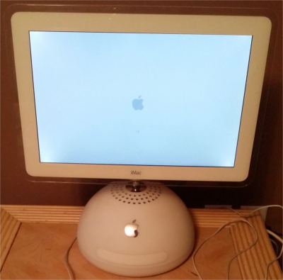
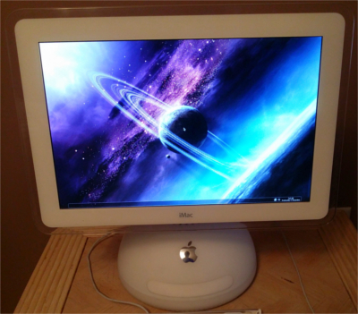
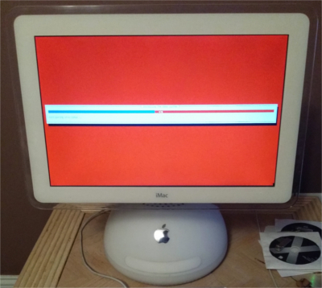
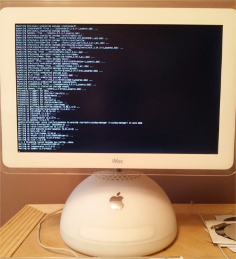
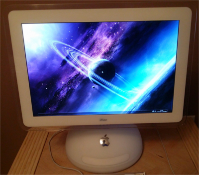

[hsilvey@umass ~]$ cat dual-boot-imac-g4-linux.txt_

What it is
Back in the early 2000's, my family purchased an iMac G4 as the home computer. We used it for several years, and it did it's job, but eventually it just ended up in the basement as a memory. Recently, I decided to try to breath some new life into this machine by wiping the disk drive and reinstalling Mac OS X from scratch. I had just successfully installed Kali Linux on my laptop, though, and my father was interested in seeing if I could successfully dual boot this old iMac with Linux as well. Looking for fun projects, I took the assignment and began right away.
My background
I'd begun working with the Linux platform about a year prior to this project. During my first semester as a Freshman in college, my roommate introduced me to Arch Linux, a distribution centered around customization and being lightweight. Being the ambitious person I am, I decided to partiton my Windows desktop computer to be able to install Arch alongside Windows. Starting with Arch was an unorthodox idea, since it's considered a distribution for experienced Linux users, but I learned a lot and I'm still using (a fork of, at least) it today.
Wiping the disk drive and installing OS X was simple enough once I found our old OS X Tiger 10.4 DVD, but figuring out how to wipe the disk before finding the DVD was very frustrating. The specific iMac G4 that I have is actually unable to read normal DVD's using it's CD drive, and can only read standard CD's. This meant that I was limited to 700MB of data on the blank CD's that we owned, which I then had to boot from once burned. At first, I tried to boot GParted Live, a partitioning software, but the .iso file was too large for the CD to hold. I also couldn't simply wipe the disk drive from within the existing install of OS X 10.4.11, because the partition scheme for OS X 10.4 was a single partition, which included the boot files on it. As a security measure, a user cannot erase or modify the partition with the boot data on Mac OS X, which, in my case, was the entire partition. Therefore, I couldn't partition anything or erase anything.
However, my 2012 MacBook Pro had a firewire port on it, and we had some old firewire cables and a converter from a newer version to the old version which the iMac G4 had. Using this technology, I was able to connect my laptop to the iMac, boot the iMac into firewire target mode, and then externally partition the iMac's disk drive into 2 partitions. Then, I used the specially made OS X Tiger DVD to install Mac OS X 10.4 to one partition on the iMac. After that was done, I had to find a bootable iso file small enough to fit on one of the CD's I had, which I would use to install Linux. Since the iMac G4 has a PowerPC (ARM) processor, though, this was even more complicated. Almost all computers today, excluding mobile devices, are built upon Intel's x86 processor, so finding a good Operating System built for PowerPC processors was going to be a challenge.
After much research, I settled with trying a netinstall of MintPPC, a distribution of Mint Linux designed for PowerPC computers. I chose netinstall because that way, the install image wouldn't take up much space and I would be able to install from a CD. After successfully booting from the CD, I was prompted to enter the url to install the base system from, but it turns out the iMac was unable to connect to the internet even with an ethernet cable at this stage. So, I simply used the default install that came with the image, which ended up being Debian 7 Wheezy Linux. When installing, Debian detected the hardware and installed packages compatible with PowerPC. Success!
The next problem appeared after I logged into the system, when the standard GNOME desktop would not respond. To fix this, I force entered the command line and erased the GNOME desktop environment and installed the OpenBox window manager instead. From there, I simply installed and configured various applications to create a clean and low resource desktop evironment.
 The future
I'm happy to say that this 1GB RAM PowerPC iMac G4 is now usable again! I succeeded in breathing new life into it, and even did so for another old PC we own. Successfully connecting the iMac and other PC to my home network wirelessly is the next step in this project. Currently, both computers are connected via ethernet, which works fine, but struggle to properly connect via wireless. They are both able to discover networks, but for some reason I have yet to discern, are unable to successfully join said networks. One other small improvement includes fixing the flash plugin on the iMac. Now, there are 4 computers in my house which run Linux (all set up by me!): My desktop (Manjaro Linux) & Windows, my laptop (Kali Linux and OS X), the iMac G4 (Debian Linux and OS X), and an HP Pavillion (LXLE Linux).
Back in the early 2000's, my family purchased an iMac G4 as the home computer. We used it for several years, and it did it's job, but eventually it just ended up in the basement as a memory. Recently, I decided to try to breath some new life into this machine by wiping the disk drive and reinstalling Mac OS X from scratch. I had just successfully installed Kali Linux on my laptop, though, and my father was interested in seeing if I could successfully dual boot this old iMac with Linux as well. Looking for fun projects, I took the assignment and began right away.
My background
I'd begun working with the Linux platform about a year prior to this project. During my first semester as a Freshman in college, my roommate introduced me to Arch Linux, a distribution centered around customization and being lightweight. Being the ambitious person I am, I decided to partiton my Windows desktop computer to be able to install Arch alongside Windows. Starting with Arch was an unorthodox idea, since it's considered a distribution for experienced Linux users, but I learned a lot and I'm still using (a fork of, at least) it today.


The processWiping the disk drive and installing OS X was simple enough once I found our old OS X Tiger 10.4 DVD, but figuring out how to wipe the disk before finding the DVD was very frustrating. The specific iMac G4 that I have is actually unable to read normal DVD's using it's CD drive, and can only read standard CD's. This meant that I was limited to 700MB of data on the blank CD's that we owned, which I then had to boot from once burned. At first, I tried to boot GParted Live, a partitioning software, but the .iso file was too large for the CD to hold. I also couldn't simply wipe the disk drive from within the existing install of OS X 10.4.11, because the partition scheme for OS X 10.4 was a single partition, which included the boot files on it. As a security measure, a user cannot erase or modify the partition with the boot data on Mac OS X, which, in my case, was the entire partition. Therefore, I couldn't partition anything or erase anything.
However, my 2012 MacBook Pro had a firewire port on it, and we had some old firewire cables and a converter from a newer version to the old version which the iMac G4 had. Using this technology, I was able to connect my laptop to the iMac, boot the iMac into firewire target mode, and then externally partition the iMac's disk drive into 2 partitions. Then, I used the specially made OS X Tiger DVD to install Mac OS X 10.4 to one partition on the iMac. After that was done, I had to find a bootable iso file small enough to fit on one of the CD's I had, which I would use to install Linux. Since the iMac G4 has a PowerPC (ARM) processor, though, this was even more complicated. Almost all computers today, excluding mobile devices, are built upon Intel's x86 processor, so finding a good Operating System built for PowerPC processors was going to be a challenge.
After much research, I settled with trying a netinstall of MintPPC, a distribution of Mint Linux designed for PowerPC computers. I chose netinstall because that way, the install image wouldn't take up much space and I would be able to install from a CD. After successfully booting from the CD, I was prompted to enter the url to install the base system from, but it turns out the iMac was unable to connect to the internet even with an ethernet cable at this stage. So, I simply used the default install that came with the image, which ended up being Debian 7 Wheezy Linux. When installing, Debian detected the hardware and installed packages compatible with PowerPC. Success!
The next problem appeared after I logged into the system, when the standard GNOME desktop would not respond. To fix this, I force entered the command line and erased the GNOME desktop environment and installed the OpenBox window manager instead. From there, I simply installed and configured various applications to create a clean and low resource desktop evironment.
 The future
I'm happy to say that this 1GB RAM PowerPC iMac G4 is now usable again! I succeeded in breathing new life into it, and even did so for another old PC we own. Successfully connecting the iMac and other PC to my home network wirelessly is the next step in this project. Currently, both computers are connected via ethernet, which works fine, but struggle to properly connect via wireless. They are both able to discover networks, but for some reason I have yet to discern, are unable to successfully join said networks. One other small improvement includes fixing the flash plugin on the iMac. Now, there are 4 computers in my house which run Linux (all set up by me!): My desktop (Manjaro Linux) & Windows, my laptop (Kali Linux and OS X), the iMac G4 (Debian Linux and OS X), and an HP Pavillion (LXLE Linux).
Posted: 12-24-14